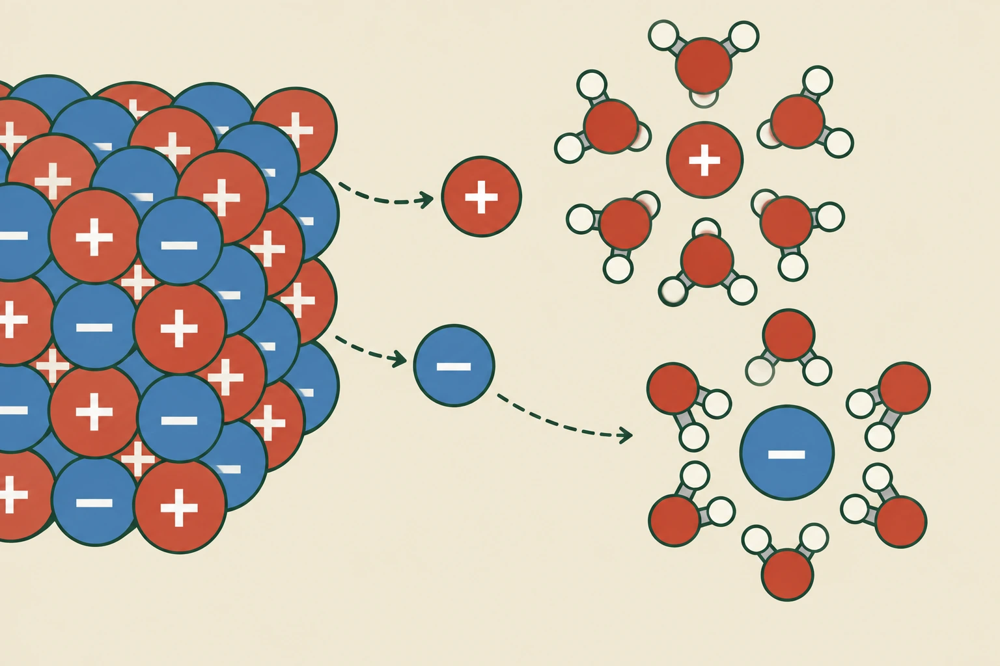
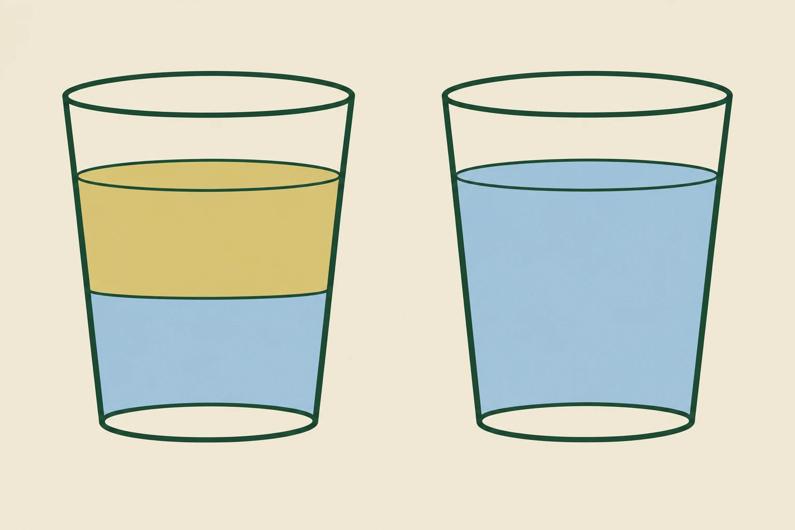
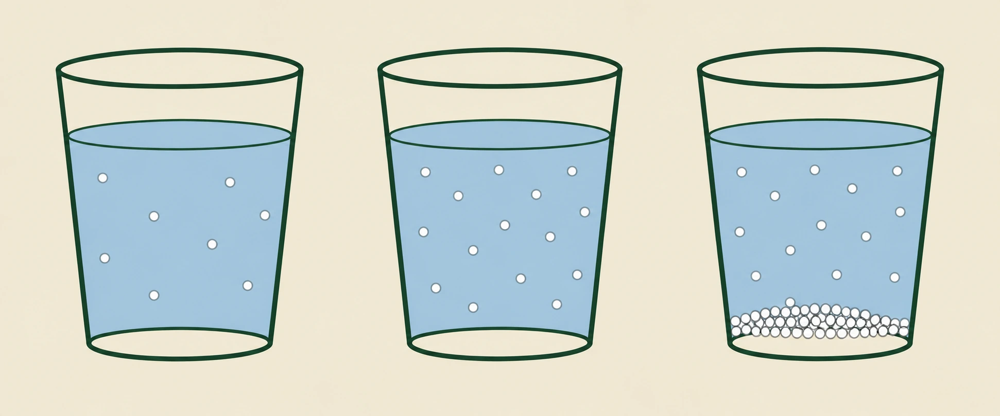

- En lösning bildas när ett ämne fördelar sig jämnt i ett annat
- Ämnet som löser kallas lösningsmedel
- Ämnet som löses kallas löst ämne
- Det lösta ämnet försvinner inte — partiklarna sprids ut
- Vatten är det vanligaste lösningsmedlet
Många av de ämnen du möter till vardags är blandningar. Havsvatten är vatten med salt i, läsk är vatten med socker och kolsyra, och blodet i din kropp är vatten med en mängd ämnen lösta i sig. En viktig sorts blandning kallas lösning.
Två roller
En lösning bildas när ett ämne fördelar sig jämnt i ett annat. De två ämnena får olika namn beroende på vilken roll de har.
Ämnet som löser det andra kallas lösningsmedel, och ämnet som löses kallas löst ämne. Löser du socker i vatten är vattnet lösningsmedel och sockret det lösta ämnet. Vanligtvis är lösningsmedlet det det finns mest av.
Ämnet försvinner inte
Det ser ut som om sockret försvinner när du rör om. Det gör det inte.
Sockerpartiklarna finns kvar precis som förut, men de har spridits ut och fördelat sig mellan vattenmolekylerna. De är för små för att synas var för sig, och därför ser lösningen klar ut.
Du kan övertyga dig själv på två sätt. Vattnet smakar sött, vilket det inte gjorde innan. Och låter du vattnet avdunsta ligger sockret kvar.
Varför vatten löser så mycket
Vatten är det vanligaste lösningsmedlet på jorden, och det är ingen slump. I förra avsnittet lärde du dig att vattenmolekylen är polär — den har en svagt negativ sida vid syret och svagt positiva sidor vid vätena. Det gör att vattenmolekyler kan attrahera andra partiklar som är laddade eller polära.
När ett ämne hamnar i vatten kan vattenmolekylerna lägga sig runt partiklarna och dra i dem från olika håll. Är dragningen tillräckligt stark lossnar partiklarna från varandra och sprids ut i vattnet, och då säger vi att ämnet har lösts. Exakt hur det går till beror på vad för slags ämne det är, och det är vad nästa del handlar om.
- En lösning är en blandning där ett ämne fördelats jämnt i ett annat
- Lösningsmedlet är det ämne som löser, oftast vatten
- Det lösta ämnet är det som fördelas
- Partiklarna finns kvar men sprids mellan lösningsmedlets partiklar
- Vattnets polaritet gör det till ett ovanligt bra lösningsmedel
Många ämnen omkring oss finns blandade med andra ämnen, och en viktig typ av blandning är en lösning.
En lösning bildas när ett ämne fördelas jämnt i ett annat ämne. Det ämne som löser det andra kallas lösningsmedel, och det ämne som löses kallas löst ämne. Om man till exempel löser socker i vatten är vattnet lösningsmedel och sockret det lösta ämnet.
När ett ämne löses försvinner det inte. Partiklarna finns fortfarande kvar, men de sprids ut och fördelas mellan lösningsmedlets partiklar.
Vatten är ett polärt lösningsmedel
Vatten är ett mycket viktigt lösningsmedel, och det beror på att vattenmolekylen är polär.
Vattenmolekylen har en svagt negativ sida vid syreatomen och svagt positiva sidor vid väteatomerna. Därför kan vattenmolekyler attrahera andra laddade eller polära partiklar.
När ett ämne hamnar i vatten kan vattenmolekylerna lägga sig runt partiklarna och dra i dem från olika håll. Om krafterna mellan vattenmolekylerna och ämnets partiklar är tillräckligt starka kan partiklarna skiljas från varandra och spridas ut i vattnet. Ämnet har då lösts.
Varför löser sig något alls?
Standardtexten sa att partiklar löses om krafterna är tillräckligt starka. Men tillräckligt starka jämfört med vad?
Att lösa ett ämne innebär alltid att befintliga bindningar bryts och nya bildas. Tre saker sker samtidigt när salt hamnar i vatten. Attraktionen mellan jonerna i kristallen måste brytas, vilket kräver energi. Vätebindningar mellan vattenmolekyler måste brytas för att ge plats, vilket också kräver energi. Och nya bindningar mellan vattenmolekyler och joner bildas, vilket frigör energi.
Om det tredje ger mer än de två första kostar, löser sig ämnet lätt. Är det ungefär jämnt kan ämnet lösas ändå, men lösningen blir då kall — energin tas från omgivningen.
Det kan du känna. Löser du ammoniumnitrat i vatten blir bägaren märkbart kall, och det är precis principen bakom kylpåsar från apoteket. Löser du i stället kalciumklorid blir vattnet varmt, och det är principen bakom värmepåsar.
Och en sak till som driver på
Energi är inte hela historien. Det finns en andra drivkraft som kallas entropi, ungefär oordning eller utspriddhet.
Naturen går över tid mot mer oordnade tillstånd, helt enkelt för att det finns långt fler sätt att vara oordnad på än att vara ordnad. Ett saltkorn där varje jon har sin bestämda plats är extremt ordnat. Samma joner utspridda i en liter vatten är oordnade, och det finns ofantligt många fler sätt att vara utspridd på.
Därför kan ämnen lösas även när energiräkningen går back. Utspridningen i sig är en vinst.
Om modellen: standardtexten talade om krafter som är "tillräckligt starka", vilket är sant men cirkulärt. Med energibalans och entropi blir upplösning något du kan resonera om — och det förklarar varför vissa ämnen kyler ner vattnet när de löses, vilket krafterna ensamma inte kan.
- Jonbundna ämnen löses genom att vattenmolekylerna drar isär jonerna
- Jonerna blir fria i vattnet men finns kvar
- Polära molekyler löses också, men blir inte joner
- Opolära ämnen löser sig dåligt i vatten
- Regeln kallas lika löser lika
Olika ämnen löser sig på olika sätt, beroende på hur de är byggda. Det är här allt du lärt dig i de tidigare avsnitten kommer till användning.
När jonbundna ämnen löses
I ett jonbundet ämne som koksalt hålls positiva och negativa joner samman i ett regelbundet mönster. Det du lärde dig i avsnitt 3.
När saltet hamnar i vatten händer något. Vattenmolekylerna är polära och kan därför vända rätt sida mot varje jon: den svagt negativa syresidan vänds mot de positiva jonerna, och de svagt positiva vätesidorna vänds mot de negativa jonerna.
Många vattenmolekyler lägger sig på det sättet runt varje jon och drar i den från olika håll. Blir den samlade dragningen starkare än attraktionen som håller jonen kvar i kristallen, lossnar jonen och sprids ut i vattnet.
- Att kristallen består av omväxlande röda och blå klot
- Vilken sida av vattenmolekylen som vänds mot det röda klotet
- Vilken sida som vänds mot det blå
- Att jonerna finns kvar — de försvinner inte, de blir omgivna

De positiva och negativa jonerna finns fortfarande kvar. Men de är inte längre bundna till varandra — de simmar omkring var för sig, omgivna av vattenmolekyler.
Det är alltså vattnets polaritet som gör att jonbundna ämnen kan lösas. Och att det finns fria joner i lösningen får stor betydelse längre fram, när vi kommer till syror och baser.
När molekylära ämnen löses
Ämnen som består av molekyler kan också lösas i vatten, men något annat händer med dem. Socker är ett exempel. Sockermolekyler är polära, och därför attraheras de av vattenmolekylerna på ungefär samma sätt som joner gör. Vattenmolekylerna lägger sig runt sockermolekylerna och drar isär dem från varandra.
Men här är skillnaden: sockermolekylerna blir inte joner. De delas inte upp i laddade delar utan finns kvar som hela molekyler, bara utspridda mellan vattenmolekylerna.
Det är därför sockerlösning inte leder ström, medan saltlösning gör det. I saltlösningen finns fria laddningar som kan röra sig, i sockerlösningen finns det inte.
När ämnen inte löser sig
Opolära ämnen löser sig oftast dåligt i vatten. Olja är det tydligaste exemplet. Oljemolekyler är opolära — de har ingen positiv och ingen negativ sida — och därför har vattenmolekylerna ingenting att haka tag i. Vattenmolekylerna håller hellre ihop med varandra, och oljan trängs undan till ett eget lager.
- Vilket glas som har en gräns mitt i vätskan
- Vilket glas där du inte kan se att något är löst
- Att båda glasen innehåller två ämnen

Lika löser lika
Det ger en av kemins mest användbara tumregler:
lika löser lika
Polära ämnen löser sig bra i polära lösningsmedel. Opolära ämnen löser sig bra i opolära lösningsmedel. Blandar man polärt och opolärt händer däremot inte mycket.
Det förklarar varför fettfläckar inte går bort med bara vatten, men går bort med diskmedel. Och det förklarar varför vissa saker doftar starkare i olja än i vatten.
- Vattnets polaritet gör att molekylerna kan orientera sig efter laddning
- I jonbundna ämnen dras jonerna isär och sprids i vattnet
- I molekylära ämnen sprids hela molekyler ut, de delas inte
- Opolära ämnen som olja löses dåligt i vatten
- Lika löser lika — polärt i polärt, opolärt i opolärt
När jonbundna ämnen löses
I ett jonbundet ämne hålls positiva och negativa joner samman av elektriska krafter i ett regelbundet mönster.
När ämnet hamnar i vatten påverkas jonerna av vattenmolekylernas polaritet. Vattenmolekylens svagt negativa sida dras mot positiva joner, medan den svagt positiva sidan dras mot negativa joner.
Vattenmolekylerna kan därför lägga sig runt jonerna och dra i dem från olika håll. Om attraktionskraften mellan vattenmolekylerna och jonerna blir tillräckligt stor kan jonerna skiljas från varandra och spridas ut i vattnet.
De positiva och negativa jonerna finns då kvar, men de är inte längre bundna tillsammans på samma sätt som i det fasta ämnet. Det är alltså vattnets polaritet som gör att många jonbundna ämnen kan lösas i vatten.
Att lösningen innehåller fria, rörliga joner får betydelse längre fram — det är därför sådana lösningar leder elektrisk ström, och det är utgångspunkten när vi kommer till syror och baser.
När molekylära ämnen löses
Även ämnen som består av molekyler kan lösas i vatten.
Polära molekyler kan ofta attraheras av vattenmolekyler, eftersom även de har ojämnt fördelade laddningar. Socker är ett exempel på ett molekylärt ämne som kan lösas i vatten — vattenmolekylerna attraherar olika delar av sockermolekylerna och drar isär dem från varandra.
Sockermolekylerna förändras däremot inte till joner när de löses. De finns kvar som molekyler, men sprids ut mellan vattenmolekylerna. Det är skillnaden mot jonbundna ämnen, och det är också förklaringen till att en sockerlösning inte leder ström.
Opolära ämnen
Opolära ämnen löser sig oftast dåligt i vatten.
Olja är ett exempel. Oljemolekylerna är opolära och attraheras därför inte särskilt starkt av vattenmolekylerna, som hellre håller ihop med varandra. Därför blandas olja och vatten dåligt.
En vanlig regel inom kemin är därför:
lika löser lika
Det betyder att polära ämnen ofta löser sig bra i polära lösningsmedel, medan opolära ämnen löser sig bättre i opolära lösningsmedel.
Varför löser sig inte allt salt?
Regeln lika löser lika antyder att alla jonföreningar borde lösa sig i vatten, eftersom joner är så laddade de kan bli. Men så är det inte. Koksalt löser sig utmärkt, medan kalk — kalciumkarbonat — knappt löser sig alls, och silverklorid är i praktiken olösligt.
Skillnaden ligger i en tävling mellan två attraktioner.
Å ena sidan attraktionen mellan jonerna i kristallen, som håller ihop den. Å andra sidan attraktionen mellan vattenmolekylerna och de enskilda jonerna, som drar isär den. Vinner den andra löser sig ämnet. Vinner den första blir kristallen kvar.
Attraktionen i kristallen växer kraftigt med laddningen. Natrium- och kloridjoner har laddningarna plus ett och minus ett. Kalciumjoner har plus två och karbonatjoner minus två, och dubbla laddningar ger mycket starkare bindning i gittret — samma sak som gjorde magnesiumoxidens smältpunkt så hög.
Att kalk är svårlösligt är därför inte ett undantag från regeln, utan en konsekvens av att den ena sidan i tävlingen råkar vara mycket stark.
Det här får praktisk betydelse. Kalk som inte löser sig är vad som bygger upp droppstenar i grottor, vad som sätter igen kaffebryggaren, och vad som gör att kalksten kan användas som byggnadsmaterial utan att lösas upp i regn. Nästan.
Och varför olja faktiskt inte löser sig
Den vanliga förklaringen är att vattenmolekylerna hellre håller ihop med varandra än med oljan. Det är sant, men bilden är mer intressant än så.
En oljemolekyl i vatten tvingar vattenmolekylerna runt omkring att ordna sig. De kan inte bilda vätebindningar in mot oljan, så de vänder sig och bildar ett ordnat skal runt den i stället.
Ordning är entropimässigt dyrt, som vi såg i fördjupningen till underdel A. Ju mer oljeyta som exponeras mot vatten, desto fler vattenmolekyler tvingas in i ett ordnat skal.
Därför klumpar oljedropparna ihop sig. Två små droppar som blir en stor har mindre sammanlagd yta än de hade var för sig, och färre vattenmolekyler behöver ordna sig. Oljan skiljer sig inte från vattnet för att den stöts bort — den gör det för att vattnet vinner på att hålla ihop.
Om modellen: lika löser lika är en utmärkt tumregel och stämmer nästan alltid. Men den beskriver ett utfall, inte en orsak. Under den ligger samma två drivkrafter som i förra fördjupningen: vilka bindningar som ger mest energi, och hur ordnat resultatet blir.
- Koncentration säger hur mycket löst ämne det finns i lösningen
- Mycket löst ämne = koncentrerad, lite = utspädd
- Löslighet är hur mycket av ett ämne som går att lösa
- Lösligheten beror på ämnet, lösningsmedlet och temperaturen
- När inget mer kan lösas är lösningen mättad
När man beskriver en lösning räcker det inte att veta vilka ämnen som ingår. Man behöver också veta hur mycket.
Koncentration
Hur mycket löst ämne en lösning innehåller kallas lösningens koncentration. En lösning med mycket löst ämne i förhållande till mängden lösningsmedel har hög koncentration, och en lösning med lite löst ämne har låg koncentration. Man brukar säga att lösningen är koncentrerad respektive utspädd.
Koncentrationen går att ändra på två sätt. Tillsätter du mer av det lösta ämnet ökar den. Tillsätter du mer lösningsmedel minskar den, och lösningen blir mer utspädd.
Det känner du igen från saft. Samma mängd saftkoncentrat blir svagare ju mer vatten du häller i.
Löslighet
Det går inte att lösa hur mycket som helst av ett ämne. Hur mycket som går kallas ämnets löslighet. Lösligheten beror på tre saker: vilket ämne det är, vilket lösningsmedel som används, och vilken temperatur det är.
För de flesta fasta ämnen ökar lösligheten när temperaturen stiger. Det betyder att du oftast kan lösa mer av ett ämne i varmt vatten än i kallt, och det är därför socker löser sig lättare i varmt te än i kallt.
Mättad lösning
Fortsätter du att tillsätta ett ämne kommer du till slut till en punkt där inget mer löser sig. Lösningen är då mättad. Allt du tillsätter därefter blir liggande olöst, oavsett hur mycket du rör om.
- Antalet vita prickar i vätskan i glas 1 och glas 2
- Om antalet prickar i vätskan skiljer sig mellan glas 2 och glas 3
- Var det extra ämnet tagit vägen i glas 3

En mättad lösning innehåller alltså så mycket löst ämne som över huvud taget kan lösas under de förhållanden som råder just då. Ändrar du förhållandena — värmer du till exempel upp lösningen — kan mer lösas igen.
Vad du tar med dig
Det här avsnittet avslutar repetitionen, och det mesta i det bygger på det du redan gått igenom. Att vatten löser så mycket beror på att vattenmolekylen är polär, vilket i sin tur beror på hur elektronerna delas i de kovalenta bindningarna. Att salt löses till fria joner beror på att salt hålls ihop av jonbindningar, som vattenmolekylerna kan bryta.
Och just de fria jonerna i lösning är utgångspunkten för nästa område. Syror och baser handlar om vad särskilda joner gör i vattenlösning, och nu har du allt du behöver för att förstå det.
- Koncentration anger mängden löst ämne i förhållande till lösningsmedlet
- Lösningar beskrivs som koncentrerade eller utspädda
- Löslighet är den största mängd som kan lösas under givna förhållanden
- För de flesta fasta ämnen ökar lösligheten med temperaturen
- En mättad lösning innehåller så mycket löst ämne som kan lösas
Koncentration
När vi beskriver en lösning är det ofta viktigt att veta hur mycket löst ämne som finns i lösningen. Det kallas lösningens koncentration.
En lösning med mycket löst ämne i förhållande till mängden lösningsmedel har hög koncentration, medan en lösning med lite löst ämne har låg koncentration. Man brukar därför tala om koncentrerade och utspädda lösningar.
Om mer av det lösta ämnet tillsätts ökar koncentrationen. Om mer lösningsmedel tillsätts minskar den, och lösningen blir mer utspädd.
Löslighet
Alla ämnen löser sig inte lika lätt, och det går inte alltid att lösa hur mycket som helst.
Hur mycket av ett ämne som kan lösas i ett visst lösningsmedel kallas ämnets löslighet. Lösligheten beror bland annat på vilket ämne det är, vilket lösningsmedel som används och temperaturen.
För många fasta ämnen ökar lösligheten när temperaturen stiger. Det innebär att man ofta kan lösa mer av ett ämne i varmt vatten än i kallt vatten.
Mättad lösning
Om man fortsätter att tillsätta ett ämne till en lösning kommer man till slut till en punkt där inget mer kan lösas. Lösningen är då mättad.
Om mer av ämnet tillsätts kommer det att bli kvar utan att lösas. En mättad lösning innehåller alltså så mycket löst ämne som kan lösas under de aktuella förhållandena.
Sammanfattning av repetitionen
För att förstå hur lösningar bildas behöver man tänka på hur partiklar påverkar varandra.
Vattnets polaritet gör att vattenmolekyler kan attrahera många andra partiklar. Jonbundna ämnen kan lösas när vattenmolekylerna omger och drar isär jonerna, och polära molekyler kan ofta lösas därför att de attraheras av vattenmolekylernas laddningsskillnader. Opolära ämnen löser sig däremot oftast dåligt i vatten.
Begreppen lösningsmedel, löst ämne, koncentration, löslighet och mättad lösning används för att beskriva hur lösningar fungerar och hur mycket av ett ämne som finns löst.
Att jonbundna ämnen löses till fria, rörliga joner är dessutom utgångspunkten för nästa område. Syror och baser handlar om vad vissa bestämda joner gör i vattenlösning.
Varför ökar lösligheten med temperaturen — och när gör den inte det?
Standardtexten sa att lösligheten för de flesta fasta ämnen ökar med temperaturen. Det stämmer, men formuleringen döljer att det finns undantag och att orsaken inte är självklar.
Att lösa ett ämne kräver ofta energi, som vi såg i fördjupningen till underdel A. Tillför man värme tillför man energi, och då blir det lättare att bryta bindningarna som håller ämnet samman. Därför ökar lösligheten.
Men för ämnen där upplösningen i stället frigör energi gäller det motsatta. Ökad temperatur motverkar då upplösningen, och lösligheten minskar när det blir varmare. Läsk illustrerar det: koldioxid löser sig sämre i varmt vatten än i kallt, och det är därför en ljummen läsk pyser mer och smakar fadare.
Samma sak har konsekvenser i naturen. Varmare vatten håller mindre syre löst, och det är en av orsakerna till att uppvärmning av sjöar och hav påverkar fisk och andra vattenlevande organismer.
Övermättade lösningar
Det finns ett tillstånd standardtexten inte nämner, och det är märkligare än det låter.
Löser man socker i hett vatten tills lösningen är mättad, och sedan kyler ner den mycket försiktigt utan att röra om, händer ibland ingenting. Lösningen innehåller nu mer socker än den borde kunna hålla vid den temperaturen. Den är övermättad.
Ett sådant tillstånd är instabilt men kan bestå länge, eftersom kristallisationen behöver något att börja på. Tillsätter man ett enda sockerkorn, eller bara skakar till bägaren, växer kristaller blixtsnabbt genom hela lösningen.
Det är precis så man gör kandisocker. Och samma princip, med ett annat ämne, är vad som får en värmedyna att stelna och bli varm när man knäpper på metallplattan inuti.
Om modellen: att lösligheten ökar med temperaturen är en tumregel med undantag, och undantagen är inte slarv i regeln — de följer av om upplösningen kräver eller frigör energi. Den som förstår det kan förutsäga åt vilket håll temperaturen drar, i stället för att memorera en regel som ibland inte stämmer.
Laddar övningskort…
Laddar frågor ...